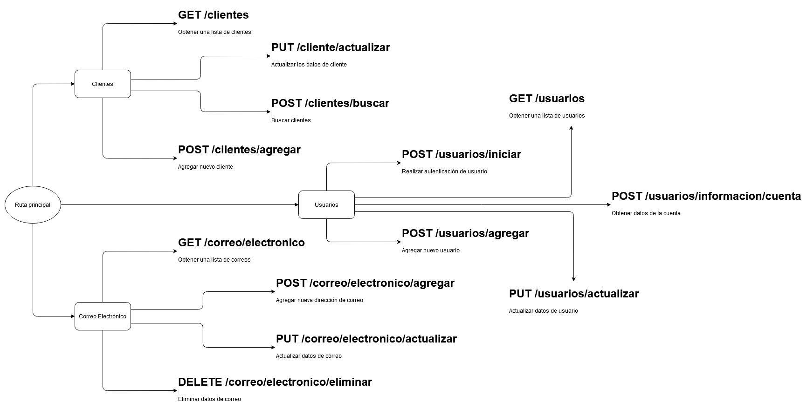

¿Qué es la API de Gestión de Clientes?
La API de Gestión de Clientes permite la interacción con la base de datos de clientes, facilitando operaciones CRUD (Crear, Leer, Actualizar, Eliminar), entre otras funcionalidades como generación de reportes, envío de notificaciones vía e-mail y autenticación de usuarios.
Características de la API
- Autenticación de usuarios mediante tokens JWT.
- Operaciones CRUD para gestionar información de clientes.
- Generación de reportes personalizados en tiempo real.
- Envío de notificaciones vía e-mail.
- Endpoints diseñados para alta escalabilidad y eficiencia.
- Endpoints protegidos mediante middlewares.
¿Cómo funciona?
La API se estructura de manera que los usuarios puedan realizar solicitudes HTTP a los endpoints de la API para interactuar con los datos:
- Autenticación del usuario (JWT)
- Realización de solicitudes (GET, POST, PUT, DELETE)
- Procesamiento de datos en el servidor
- Envío de respuestas (JSON)
Diagrama de rutas de la API
A continuación se muestra un diagrama que ilustra cómo se estructuran y distribuyen las rutas dentro de la API:

Endpoints principales
- POST /usuarios/iniciar Realiza la autenticación del usuario.
- GET /clientes Obtiene una lista de clientes.
- POST /clientes/agregar Agrega un nuevo cliente.
- PUT /clientes/actualizar Actualiza los datos de cliente.
Ejemplo de Endpoint: Autenticación de Usuario
POST /clientes/iniciarSolicitud:{ "usuario": { "correo-electronico": "mail@usuario.com", "clave-usuario": "clave-de-usuario" } }Respuesta:{ "respuesta": { "autenticación": "aprobada/negada", "información": { "cuenta-intento": { "información-comprobada": { "nivel": { "usuario": "tipo-de-usuario", "autorizaciones": "/leer/escribir/eliminar/actualizar" }, "puesto": "puesto-del-empleado", "nick": "nick-de-usuario", "estado-de-usuario": "habilitado-deshabilitado", "oficina": "donde-se-encuentra-el-usuario" } }, "distincion": "clave-generada-del-usuario-único" } } }
Tecnologías utilizadas
- Node.js: Plataforma para construir la lógica del backend.
- Express.js: Framework para manejar las rutas y middlewares.
- MongoDB: Base de datos NoSQL para almacenar y consultar información de clientes.
- JWT: Autenticación segura basada en tokens.
Desafíos y soluciones
Seguridad e integridad de la API
- Desafío: Proteger los endpoints contra accesos no autorizados y garantizar la autenticación segura.
- Solución: Implementé JWT para autenticar a los usuarios y middlewares en todas las rutas para validar las solicitudes.
Optimización del rendimiento y escalabilidad
- Desafío: Asegurar que la API pueda manejar grandes volúmenes de solicitudes sin degradar su desempeño.
- Solución: Utilicé la arquitectura MVC, reutilización de componentes y consultas optimizadas a la base de datos.